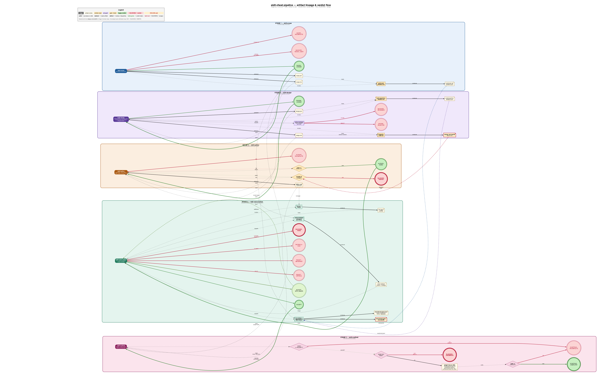
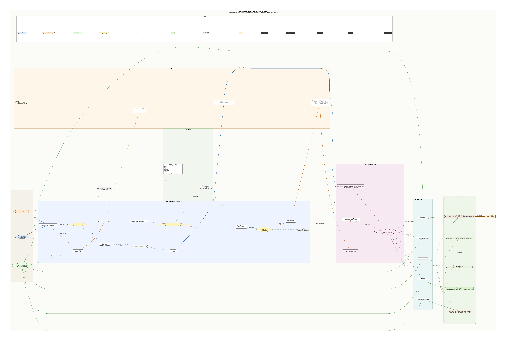
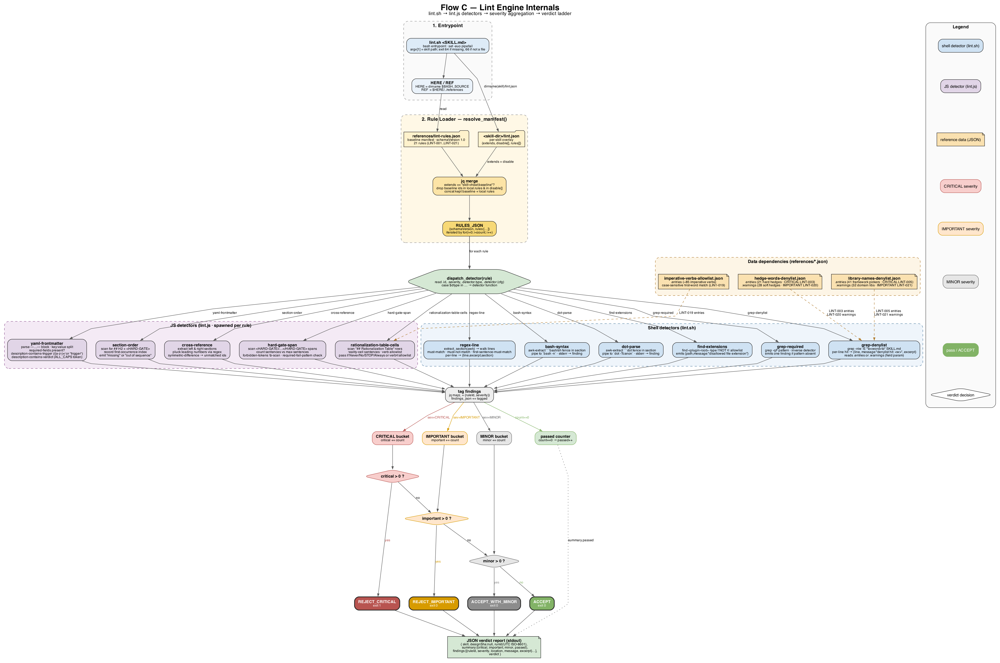
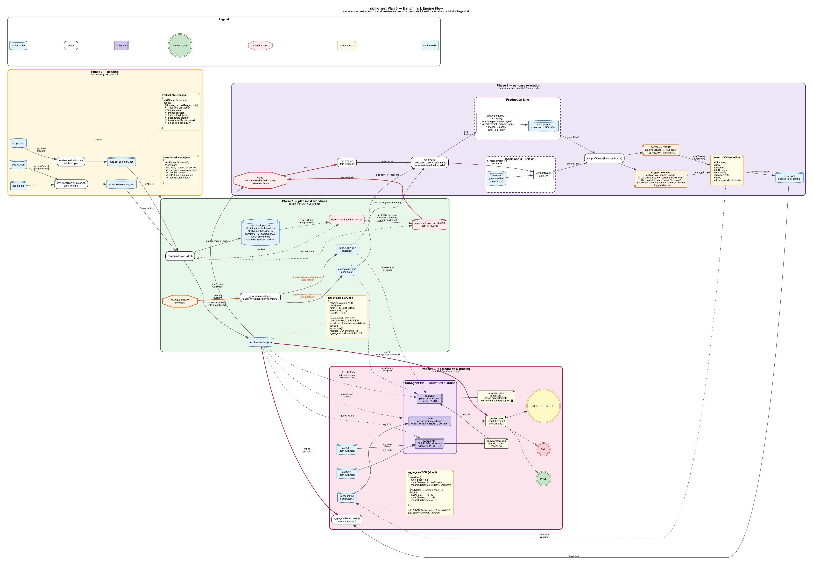

Tabloid landscape — pinch-zoom each page on the iPad. Each flow gets one full-page diagram + one page of companion notes.

Landscape 11×17 in at 300 dpi. Source:
A-pipeline-artifact-lineage.dot. Render:
A-pipeline-artifact-lineage.png (4562×2850 px).
Five horizontal bands, one per pipeline stage —
skill-scope, skill-design,
skill-author, skill-voice-review,
skill-scaffold — stacked top-to-bottom so the reader sees
the full pipeline at a glance. Inside each band, the stage box sits on
the left and everything it touches (emitters, subagents, on-disk
artifacts, verdicts) flows left-to-right out of it. The happy path is a
bold green chain of verdict batons
(SCOPE_LOCKED → DESIGN_LOCKED → AUTHOR_DONE → ACCEPT → SCAFFOLD_COMPLETE)
that crosses the bands vertically. Every BLOCKED_* escape
is colored red and exits its stage sideways. Artifacts are drawn as
note-shapes; scripts that emit artifacts
(emit-eval-skeleton.sh,
emit-assertion-skeleton.sh, integrity-hash.sh,
lint.sh, run-eval.js) are drawn as component
boxes; dispatched subagents use the 3-D box shape.
scope.json is the keystone, not scope.md.
scope.md is the human trace; scope.json is what every downstream stage
actually reads. It alone carries plugin-mode to Stage 5 and
skillName to the Stage 4 benchmark engine. Edit scope.md by
hand and you invalidate nothing; edit scope.json and the pipeline
breaks.
The SHA-256 integrity loop is a single thin red
line. Stage 2’s integrity-hash.sh produces
design.md.sha256. Stage 3’s first action is to re-hash the
bytes between the integrity-block markers and compare against that
sidecar. Any drift drops straight into BLOCKED_TAMPER — the
only BLOCKED state in the pipeline that is self-diagnosed by a
cryptographic test rather than a heuristic.
Two parallel “skeleton” emitters seed the benchmark
engine. emit-eval-skeleton.sh (Stage 1) writes
eval-set-skeleton.json;
emit-assertion-skeleton.sh (Stage 2) writes
assertion-skeleton.json. Both feed into Stage 4’s
run-eval.js as cases[] and
assertions[] respectively. Without either, the Plan-5
benchmark engine has nothing to run against.
Voice-review’s ACCEPT is a hard lock on Stage 5.
The red edge from Stage 5’s verdict == ACCEPT? diamond to
SCAFFOLD_INCOMPLETE is the single choke point between
passing voice-review and shipping to disk.
ACCEPT_WITH_MINOR is drawn looping back into Stage 4
because the scaffold stage rejects it as not-quite-ACCEPT and forces a
rerun.
Three “fresh subagent” dispatches, all authored-context-free. The design reviewer (Stage 2, pre-lock), the voice-reviewer (Stage 4), and the benchmark-engine runs (Stage 4) all run in isolated contexts. This is the “structural distrust” principle made concrete in the diagram: no stage ever grades its own output with its own memory.
design.md.sha256 is the single artifact whose
absence is catastrophic across two stages: Stage 3 refuses to
start without it (BLOCKED_TAMPER on missing sidecar) and Stage 2 refuses
to emit DESIGN_LOCKED without writing it. One file gates
two stages.scope.json.pluginMode is the only thing that
tells Stage 5 whether to write a full tree or a skill-only
delta. If scope.json is missing or pluginMode is
unrecognized, Stage 5 emits SCAFFOLD_INCOMPLETE — not
BLOCKED_*. The diagram labels this “not found →
SCAFFOLD_INCOMPLETE” to make the distinction visible.REJECT_CRITICAL without the subagent ever being dispatched
— a cost-saving structural gate.Top-left panel. Row 1 = node styles (stage box, artifact note,
emitter script, subagent 3-D box, gate diamond, happy verdict
double-circle, BLOCKED_* double-circle, SHA-256 tamper-seal note). Row 2
= edge semantics (solid = produces, dashed = reads, dotted = invokes,
bold green = verdict baton, bold red = BLOCKED_* escape). The dashed red
edge from design.md.sha256 into Stage 3’s
re-hash & compare diamond is the tamper-seal
verification loop — that one edge is the entire integrity contract
visualized.

Companion to B-trigger-dispatch-flow.png /
.dot. Canvas: 17×11 in landscape @ 300 dpi (~5196×3510 px),
built for iPad pinch-zoom along swimlanes.
The atlas traces every path by which skill-cheat self-triggers and ultimately routes a prompt into the 5-stage pipeline. Three coloured entry paths on the left converge on Claude’s context window in the middle, then fan out right into the five slash commands and the five stage skills they load. Read it left-to-right as time; read top-to-bottom as entry path.
Entry A (blue) — cold SessionStart. The harness
fires on startup | clear | compact (yellow diamond matcher
node). hooks/session-start reads
skills/using-skill-cheat/SKILL.md and pipes it through
lib/emit-context.sh, which jq-builds the
envelope
{hookSpecificOutput:{hookEventName:"SessionStart", additionalContext:"<body>"}}
on stdout. The harness merges that into Claude’s context before the
first turn.
Entry B (orange) — every user prompt.
UserPromptSubmit has no matcher, so
hooks/user-prompt-submit runs for every submission. It
reads JSON stdin, extracts .prompt with jq,
sources config.sh (with the project-local
.skill-cheat.sh override check next to it), then calls
detect_skill_intent which lowercases both sides and
substring-matches each keyword. On hit, it emits the same envelope shape
but with an “INTENT DETECTED” reminder. On miss, the dashed grey
silent-fallthrough branch shows the prompt reaching Claude unadorned —
no additionalContext, no error, trap 'exit 0' ERR eating
any failure.
Entry C (green) — explicit slash.
/skill-scope and siblings bypass intent detection entirely:
each commands/*.md file is a one-line wrapper that tells
Claude to “Invoke the skill-cheat:skill-<stage>
skill.” (A dotted green edge shows that slash input still traverses
UserPromptSubmit — it just wouldn’t match a keyword.)
All three paths land on the Claude-context cluster, where the
using-skill-cheat bootstrap (already resident from path A)
plus the optional INTENT reminder (from path B) constrain the decision
node. The HARD-GATE routing forces skill-authoring intent through
/skill-scope, and pipeline chaining edges show how verdicts
(SCOPE_LOCKED → DESIGN_LOCKED → AUTHOR_DONE → ACCEPT → SCAFFOLD_COMPLETE)
walk downstream. Only skill-scaffold writes to disk — the
cylinder on the far right.
using-skill-cheat) is the persistent rule; the
UserPromptSubmit hook is the just-in-time re-reminder. Either alone
would work; together they make skipping /skill-scope nearly
impossible.UserPromptSubmit, the JSON
it writes still names "hookEventName": "SessionStart" — the
plugin deliberately piggybacks on SessionStart’s additionalContext
channel.trap 'exit 0' ERR, || true on jq,
and unconditional exit 0 on missing bootstrap guarantee the
plugin never blocks a user’s prompt. Failure mode is invisibility, not
error.config.sh ships defaults, then .skill-cheat.sh
(if present in $CLAUDE_PROJECT_DIR) is sourced after it,
redefining SKILL_CHEAT_TRIGGER_KEYWORDS /
SKILL_CHEAT_WORK_DIR without the plugin needing to know the
project exists.rank=same row for commands and the row
for stage skills makes this convergence visually obvious.skill-cheat does not police the user — it rigs the context.
SessionStart plants the rule; UserPromptSubmit re-surfaces it exactly
when a keyword appears; slash commands offer a clean fast-path for users
who already know the pipeline. The hook runtime is deliberately dumb
(shell + jq), the intelligence sits in Claude’s
interpretation of the injected bootstrap. That is what “hooks make the
plugin self-triggering” means in practice: no agent code, just a
reliable whisper at the right moment.

Diagram: C-lint-engine-internals.png (4970×3300 px, 300
dpi, landscape tabloid).
The diagram traces one invocation of
lint.sh <SKILL.md> from the bash entrypoint to the
JSON verdict report emitted on stdout. Eight clusters read
top-to-bottom: Entrypoint, Rule
Loader, the central dispatcher hexagon, two
detector clusters (shell detectors from
lint.sh, JS detectors spawned via
node lint.js), a data-dependencies strip
of reference JSON files feeding specific detectors, the findings
aggregation row with four severity/pass buckets, and finally
the verdict-ladder decision chain that collapses the
buckets into one of four verdict tokens before the report is
serialized.
The centerpiece is dispatch_detector(rule) — a
case $dtype in … switch that reads the rule’s
detector.type discriminator and routes to exactly one of
eleven detector functions. Six types (find-extensions,
grep-denylist, grep-required,
regex-line, bash-syntax,
dot-parse) execute inline in bash using jq,
grep, awk, find,
bash -n, and dot -Tcanon. Five types that need
richer string parsing (yaml-frontmatter,
section-order, cross-reference,
hard-gate-span, rationalization-table-cells)
are delegated to a spawned
node lint.js --detector <type> --skill <path> --config <cfg>
process, which emits {findings:[…]} on stdout and exits
non-zero only on detector error (not on rule failure). Every detector
obeys the same contract: read config + artifact, return a JSON array of
{location, message, excerpt} findings. The dispatcher then
stamps each finding with the rule’s ruleId and
severity before concatenating it into the running
findings_json array.
The core design win is that rules are data, not
code. references/lint-rules.json carries 21 rules
where each rule is a tuple of
{id, description, severity, detector} and the detector
block is just a type tag plus typed parameters (section,
allowlist, expected-order,
forbidden-tokens, etc.). Authors of new lint rules never
write detector logic — they pick an existing type and parametrize it.
New detector kinds require one case-branch in the
dispatcher plus one function; once added, any number of rules can reuse
them. The denylist / allowlist JSON files
(hedge-words-denylist.json,
library-names-denylist.json,
imperative-verbs-allowlist.json) are referenced by path
from the rule’s detector.source, so corpus updates are
pure-data edits.
resolve_manifest() runs before dispatch. It reads
<skill-dir>/lint.json; if
.extends == "skill-cheat:baseline" it performs a
jq merge that (1) drops every baseline rule whose
id appears in the local rules[] (local
override wins), (2) drops every baseline rule whose id
appears in the local disable[], (3) concatenates the kept
baseline rules with the local rules. The voice-review skill itself ships
lint.json = {extends: "skill-cheat:baseline", disable: ["LINT-001"]}
— suppressing the plugin-wide file-extension check because the skill
inspects individual skill files, not the plugin root. If
extends is absent, the local manifest is used verbatim
(full override).
The four severity counters drive a strictly monotonic ladder:
critical > 0 → REJECT_CRITICAL (the only exit-1 path);
else important > 0 → REJECT_IMPORTANT; else
minor > 0 → ACCEPT_WITH_MINOR; else ACCEPT.
Higher severity always masks lower — a single CRITICAL finding rejects
the skill regardless of minor count. This is why the severity color-code
(red → amber → gray → green) in the diagram maps directly to the ladder:
you read the diamonds top-to-bottom and take the first yes
branch. The final JSON report preserves full detail under
summary (per-severity counts plus a passed
count of zero-finding rules) and findings[] (every tagged
finding), giving downstream reviewers both the verdict and the evidence
trail.

Companion note for D-benchmark-engine-flow.png — the
Plan 5 benchmark engine in skill-cheat.
The benchmark engine is the behavioural-evaluation layer that sits
downstream of skill-scope and skill-design. It
takes an already-scoped, already-designed skill and answers one question
with numbers: does the candidate revision actually behave better
than the baseline? It does so in four phases, each with its own
artefacts and its own failure domain.
Phase 0 (seeding) turns declarative upstream inputs
into testable skeletons. emit-eval-skeleton.sh reads
scope.json, walks .triggers[], and writes one
shouldTrigger: true positive per trigger plus five
shouldTrigger: false adversarial placeholders
(trigger-collision, instruction-injection, degenerate-prompt,
keyword-without-context, cross-skill-ambiguity) — the set is derived
from published prompt-injection literature.
emit-assertion-skeleton.sh reads design.json
and emits hard-gate-violation-absent assertions per
hardGates[] plus gate-function-question
assertions per gateFunctions[].
Phase 1 (plan init) is where the run becomes
reproducible. benchmark-plan-init.sh writes
benchmark-plan.md with an explicit integrity block
(skillName, baselineRef,
candidateRef, caseQueries[],
assertionPatterns[]) bracketed by
<!-- integrity-block:start --> /
<!-- integrity-block:end --> markers.
benchmark-integrity-hash.sh then awk-extracts the byte
range strictly between those markers (the markers themselves
never enter the hash) and writes a 64-hex-char SHA-256 sidecar. That
digest is embedded into benchmark-plan.json’s
integrityBlock.sha256. In parallel,
git-worktree-setup.sh materialises two detached worktrees
under <root>/<run-id>/{baseline,candidate}/ —
and always baseline first, because every other stage reads
them in that order and the plan-as-log schema enforces
baselineRef before candidateRef.
Phase 2 (per-case execution) iterates
cases × {baseline, candidate} × N samples and dispatches
run-eval.js. The script forks on one flag. In
mock mode (--mock-stream-file), a
pre-recorded JSONL fixture is readFileSync’d — this is what
CI uses, because it is free and deterministic. In
production mode, the script spawns
claude -p --include-partial-messages --output-format stream-json
with cwd set to the worktree skill path. Both lanes
converge on analyseStream(), which does a single thing that
matters: it looks for a stream_event whose
content_block_start is a tool_use with
input.name === skillName. That one match sets
triggered = true. A result/success event
contributes durationMs and totalTokens. Each
run emits one line of JSON tagged with ref.
Phase 3 (aggregation + grading) folds the JSONL.
aggregate-benchmark.js partitions by ref (any
ref that is not literally "baseline" or
"candidate" is a schema violation and exits 65) and
produces
{runs, passRate, meanTokens, stddevTokens, meanDurationMs, stddevDurationMs}
per side plus a delta block. Then three subagents dispatch:
grader reads transcripts + assertions and returns
tri-state PASS / FAIL / NEEDS_CONTEXT per assertion with
concrete evidence; comparator does a blind A/B
judgement — it must not know which output came from which ref
and is required to STOP if it can infer the mapping;
analyzer unblinds the comparator, reads both SKILL.md
files, and attributes the win to specific skill-text differences.
Worktrees guarantee that baseline and candidate runs cannot bleed
state. No shared scratch, no shared settings, no “oh, the candidate saw
the baseline’s cache.” The SHA-256 over the integrity block is the
anti-drift contract: if any of skillName,
baselineRef, candidateRef, the case queries,
or the assertion patterns are silently edited mid-run, the digest
changes and any stage that re-verifies will halt. Integrity violation =
STOP.
The three subagents are not redundant — they are adversarial by construction. Grader cannot judge quality; comparator cannot see origins; analyzer cannot overturn the verdict. No single agent holds all of (assertions, blind outputs, skill texts). That separation makes it structurally hard for one judgement to contaminate another.
The --mock-stream-file path exists precisely so that
pull-request CI can replay a recorded stream and verify the analysis
logic, the aggregation maths, and the plan schema without ever spawning
the real Claude CLI. Production runs flip one flag.